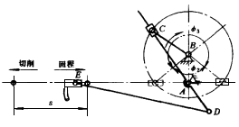
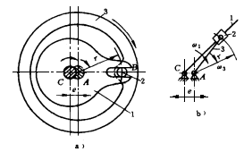

机构示意图
机构特性简介
刨床转动导杆机构

机架AB的长度比主动曲柄BC的长度短，BC通过滑块C带动转动导杆AC作非匀速转动，并具有明显的急回特性。该机构用于刨床、插床，它具有较慢的近于等速的切削行程速度和较快的回程速度。滑块E的行程S=2AD，当比值BC/AB较小时，机构的动力性能变坏，一般推荐(BC/AB)>2。转动导杆机构在回转柱塞泵、叶片泵、切纸机及旋转式发动机等机器上均有应用。
联轴器机构

用联轴器联接轴心线不重合的两轴，在两轮间传递运动和动力。 主动盘1绕C轴转动时，圆盘1上的滑槽拨动从动盘3上的销2，使其统A轴旋转，同时销2相对滑槽移动。该机构属于转动导杆机构。导杆1作匀速转动， 通过滑块与铰链带动从动杆3作非匀速转动。当偏距 e=AC很小时，从动杆3的角速度变化趋向平缓。